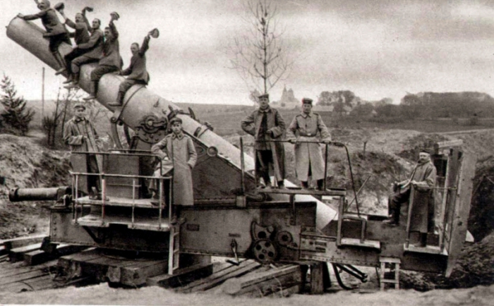
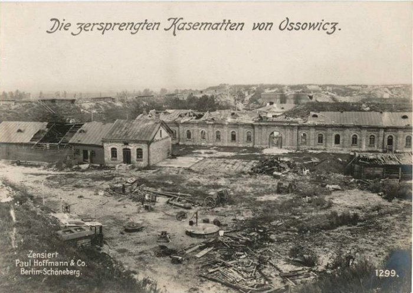
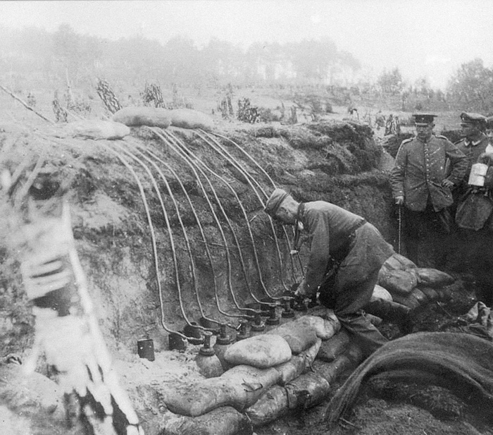
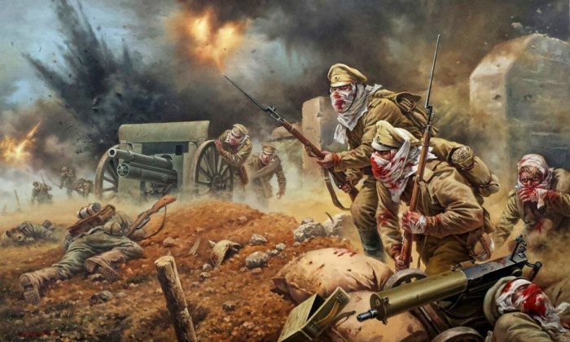
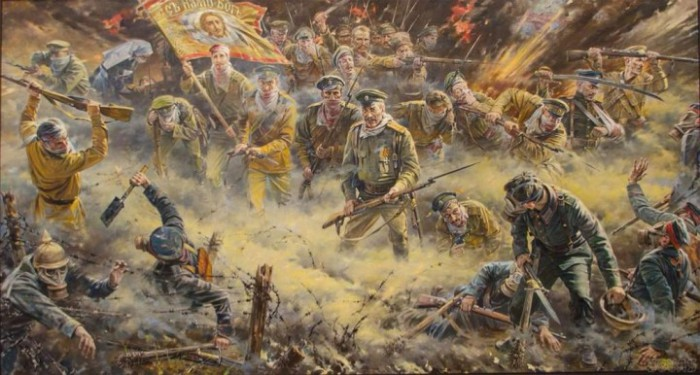

«Русские не сдаются!» - Многие слышали эту известную фразу, но мало кто знает о трагических событиях, сопутствующих ее появлению. Эти простые слова - о героическом подвиге русских воинов, о котором забыли на многие десятилетия.

Шла второй год Мировой войны. Основные сражения между армиями царской России и кайзеровской Германии развернулись на территории нынешней Польши. Наступательный порыв немцев уже несколько раз разбивался о неприступные форты крепости Осовец.

К окрестностям Осовца немцы стянули самое тяжелое вооружение, которое только было на той войне. В защитников крепости летали снаряды весом до 900 килограмм. От такого калибра не спасали никакие укрепления. За неделю интенсивного артобстрела было выпущено 250 000 снарядов крупного калибра. Русское командование отчаянно просило защитников Осовца продержаться хотя бы 48 часов. Те продержались целых полгода.
Прошло всего несколько месяцев после того, как немцы успешно применили отравляющие газы возле бельгийского города Ипр. И защитников Осовца ждала печальная участь. Российский солдат был совершенно не готов к газовым атакам. Лучшее, что он мог сделать – закрыть лицо тряпицей, смоченной в воде или в человеческой моче.

Утром 6 августа 1915 года немцы пустили хлор. Зеленое облако 12-метровой высоты поползло на позиции русских. На его пути погибало все живое. Даже листья растений темнели и опадали, словно в конце лета пришел ноябрь. Через несколько десятков минут погибли полторы тысячи защитников Осовца. Немецкие офицеры торжествовали. Они были полностью уверены в убийственной силе нового оружия. На занятие «освободившихся» укреплений отправилось несколько ландверных батальонов – всего около 7000 человек.


Немцы были ошеломлены, когда им навстречу поднялась жиденькая цепочка выживших защитников крепости. Умирающие русские солдаты были замотаны в окровавленные тряпки. Отравленные хлором, они буквально выплевывали по кусочкам свои разлагающиеся легкие. Это было страшное зрелище: русские солдаты, живые мертвецы. Их было всего шестьдесят человек – остатки 13-й роты 226-го Землянского полка. И эта группа умирающих пошла в последнюю, самоубийственную, контратаку.
Несмотря на численное преимущество, немецкая пехота не выдержала психологического потрясения. При виде гибнущих врагов, идущих прямо на них, ландверные батальоны отступили. Солдаты 13-й роты их преследовали и расстреливали, пока не вернулись на изначальные позиции. Артиллерия фортов довершила разгром врага.
Эта контратака умирающих русских солдат стала известна как «атака мертвецов». Благодаря ей крепость Осовец выстояла.